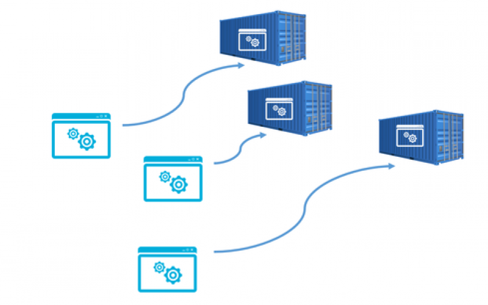

Taller Docker everywhere
Nuevos entoronos! acostumbrate.
Ram.Presenta()
- Ing.Computación Inteligente UAA
- Cofounder de Beelan Networks
- Me gusta el Queso!
- @wolftrax05
Pero en mi local
SI
funciona
... Que problema tengo!? ...
Construcción- Ejecucion
- Distribución
Algo de la Vida cotidiana
Solucion
Docker
NO es una VM (virtual machine)
Que es una maquina virtual
es una simulación de un SO dentro de una maquina física
- PESADAS: siempre rondan por los GB, muchas VMS en el mismo host repiten dependencias
- ADMINISTRACION COSTOSA:se dministrara la seguridad interna entre aplicaciones y tienen que manejarse como otro computador mas
- "LENTAS": Correr nuestras códigos en una VM implica Arrancar nuestra maquina y hacer el boot de la VM
Trae los conceptos de Contenedores
- VERSATILES: Están en el orden de los MB,Funcionan = en cualquier lado, tienen todas las dependencias para funcionar correctamente
- EFICIENTES: Comparten archivos inmutables con otros contenedores,Solo se ejecutan Procesos no un Sistema operativo completo
- "AISLADAS": Lo que pasa en el contenedor se queda en el contenedor, No pueden alterar su entorno (amenos que explícitamente se le indique lo contrario)
A INSTALAR !!!
Para los PRO
Para los Marginados
Tu ultima esperanza
NO
Olivdes crear tu cuenta
Comandos básicos en la terminal(bash)
$ pwd // Nos muestra la ruta de carpetas en la que te encuentras ahora mismo.$ mkdir // Nos permite crear carpetas (por ejemplo, mkdir Carpeta-Importante).$ touch // Nos permite crear archivos (por ejemplo, touch archivo.txt).$ rm // Nos permite borrar un archivo o carpeta (por ejemplo, rm archivo.txt). Mucho cuidado con este comando, puedes borrar todo tu disco duro.$ cat //Ver el contenido de un archivo (por ejemplo, cat nombre-archivo.txt).$ ls // ver los archivos de la una carpeta.$ cd // Nos permite navegar entre carpetas.$cat --help // Recuerda que podemos descubrir todos los argumentos de un comando con el argumento --help
Si Todo salio bien
$ docker -v$ docker version$ docker infoTu primer contenedor
$ docker run hello-worldQue es un Contenedor
- Una agrupación de procesos que se ejecutan de forma nativa como cualquier otra aplicación en la máquina host.
- Un contenedor es una entidad lógica
- Un contenedor ejecuta sus procesos de forma nativa
- Solo Cuenta con lo que se corrio
vamos a explorar un contenedor
$ docker ps $ docker ps -a$ docker inspect [IDcontenedor]/[nombreDelContenedor]$ docker inspect -f ‘{{ json .Config.Env}}’ [IDcontenedor]/[nombreDelContenedor]$ docker rename [oldName] [newName]$ docker logs [nombreDelContenedor]/[IDcontenedor]$ docker rm [nombreDelContenedor]/[IDcontenedor]$ docker rm $(docker ps -aq)Hagamoslo mas intersante
$ docker run ubuntu$ docker run -it ubuntu
el Ciclo de un Contendor
$ docker run ubuntu tail -f /dev/nullPara correr un comando en un Contenedor existente se usa exec
$ docker exec -it [nombreDelContenedor]/[IDcontendor] bashubuntu@host:$ ps // procesos de la sesiónubuntu@host:$ ps -fea // procesos de todas las sesiones$docker kill | stop | rm -f [nombreDelContenedor/[IDcontendor]Heads Up
reveal.js is a framework for easily creating beautiful presentations using HTML. You'll need a browser with support for CSS 3D transforms to see it in its full glory.
Slide Backgrounds
Set data-background="#007777" on a slide to change the full page background to the given color. All CSS color formats are supported.
Image Backgrounds
<section data-background="image.png">Repeated Image Backgrounds
<section data-background="image.png" data-background-repeat="repeat" data-background-size="100px">Pretty Code
function linkify( selector ) {
if( supports3DTransforms ) {
var nodes = document.querySelectorAll( selector );
for( var i = 0, len = nodes.length; i < len; i++ ) {
var node = nodes[i];
if( !node.className ) {
node.className += ' roll';
}
}
}
}
Courtesy of highlight.js.